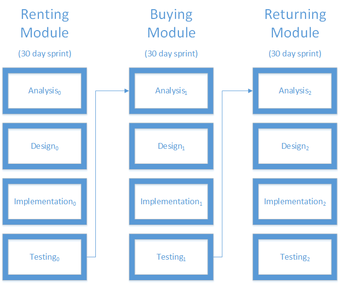
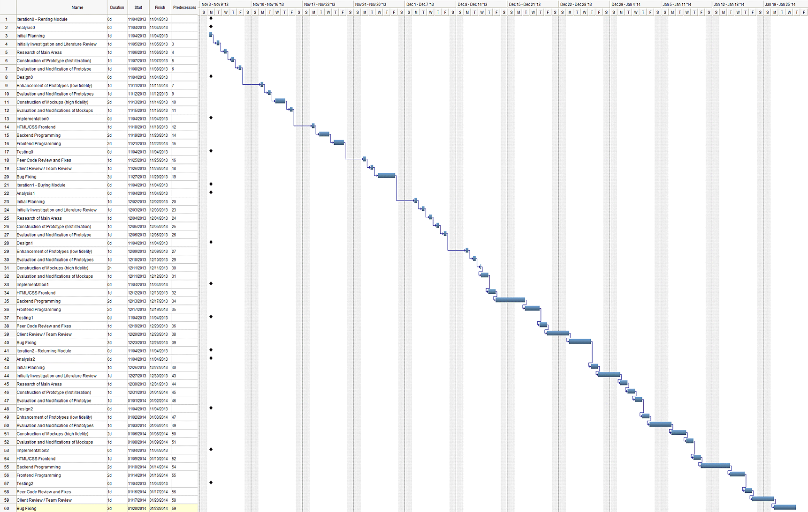

Assignment 2
Introduction of Project
The goal of this project is to implement a system for the Car Rental company called SuperRent. The primary activity of SuperRent is to rent out cars and trucks to users. We will be outlining how the system can rent vehicles, return vehicles, exchange points to rent or purchase vehicles and buy insurance.
Background
The car rental company SuperRent needs a system that will help streamline their operating procedures. The system will need to handle the different services SuperRent offers. These services include customers:
- renting vehicles.
- returning vehicles.
- exchanging points to rent or buy a vehicle.
- buying insurance for the rented vehicle.
Requirement Analysis
Use Cases / User Stories
- As a Customer, I want to be able to rent a vehicle without having made a reservation.
- I provide the Clerk with the vehicle I want and the day I wish to return it (location and pickup day are irrelevant as I am a walk-in customer, they are defaulted to the branch I am in and today?s date).
- If such a vehicle is available, I provide the Clerk with my name and phone number.
- I decide if I want insurance.
- I provide the Clerk with my driver?s licence number, credit card and credit card expiry date.
- I leave the rental agency with the vehicle.
- As a Customer, I want to be able to rent a vehicle having first made a reservation.
- I provide the Clerk with the Confirmation number OR my phone number.
- I decide if I want insurance.
- I provide the Clerk with my driver?s licence number, credit card and credit card expiry date.
- I leave the rental agency with the vehicle.
- As a Customer, I want to be able to return the vehicle I rented and pay for it.
- I return to the rental agency.
- The Clerk performs the vehicle checks and informs me what I owe.
- I indicate if I want to pay using Credit Card OR Cash OR if I am a SuperRent Club member, points to pay for my rental OR a combination of one of the first two and points. Knowing that I can use 1000 points per day for a premium or lower vehicle, OR 1500 points per day for a luxury, SUV, van or truck.
- I expect to receive back an additional Club point for every $5 I have spent.
- I receive any payment documentation for the rental and leave the rental agency.
- As a Customer, I want to be able to purchase a used vehicle from SuperRent.
- I approach the Manager and select a car from his list of available used Vehicles.
- I provide the Manager with my name, telephone number and driver?s license.
- I decide on my method of payment, Cash OR Credit Card (In this case I provide the credit card number and expiry date), AND if I am a SuperRent Club member, points to be used for the transaction. Knowing that every 2000 points I use is equivalent to $100.
- I receive any payment documentation for the purchase and leave the rental agency.
Class Diagrams / CRC Cards
| Rental System | |
|---|---|
| Responsibilities | Collaborators |
| Stores list of reservation | Reservation |
| Stores list of customers | Customer |
| Stores list of vehicles | Vehicles |
| Manage reservations | |
| Manage customers | |
| Check vehicle availability | |
| Manage insurance | |
| Print bills | |
| Manage club points | |
| Location | |
|---|---|
| Responsibilities | Collaborators |
| Stores the city of the branch | |
| Stores the location of the branch in the city | |
| Customer | |
|---|---|
| Responsibilities | Collaborators |
| Stores the biographical data for the customer (name, address, phone number) | |
| Manages if the customer is a Club member | |
| Manages their club points | |
| Vehicle Type | |
|---|---|
| Responsibilities | Collaborators |
| Stores the types of cars and trucks (Economy, Compact, Mid-size, Standard, Full-size, Premium, Luxury, SUV, Van, 24-foot, 15-foot, 12-foot, Box Trucks, Cargo Vans) | |
| Vehicle | |
|---|---|
| Responsibilities | Collaborators |
| Stores the type of car or truck | Vehicle Type |
| Stores the features | |
| Manages the rate (daily, weekly, hourly) | |
| Manages the different per-kilometer-rates | |
| Manages the different types of insurance (daily, weekly, hourly) | |
| Tracks the office the vehicle belongs to | Location |
| Stores the original purchase price of the vehicle | |
| Manages the mileage of the vehicle and flags it if the vehicle is now eligible for sale | |
| Manages a flag to see if the vehicle is currently rented | |
| Reservation | |
|---|---|
| Responsibilities | Collaborators |
| Tracks the customer that made the reservation | Customer |
| Tracks the dates and times the customer requested the vehicle for | |
| Tracks the location the customer wants to reserve the vehicle from | Location |
| Tracks the type of vehicle the customer wants to reserve | Vehicle |
| Manages the total cost for the reservation | |
| Manages any optional insurance the customer may have requested | |
| Manages a flag to see if the vehicle has been returned | |
| Manages a flag to see if the customer has paid | |
Sequence Diagrams / State Diagrams

-The renter returns the vehicle
-the clerk enters the return details (date, time, kms, fuelremaining)
-The system gets the rates for the reservation
-The system calculates the charges
-A bill is printed out by the system and giving by the clerk to the customer
-The customer pays with either cash or credit
-The clerk enters either the amount paid by cash, or the credit card information that the customer provides
-The credit card is authorized and the vehicle has been returned

-The renter indicates to the clerk how many points he wants to use to rent a vehicle and the renters customer number
-The clerk enters this information, and the points are validated by the system
-The the available vehicles that can be rented with points are searched in the DB to find an available rental that can be rented with points
-The reservation details are confirmed
-The reservation details are printed off to the clerk, and given to the renter

-The renter provides reservation details (either confirmation number or a phone number) to the clerk who looks up the reservation in the system
-The reservations are fetched, and the user is asked whether they want optional insurance by the system from the clerk
-The choice is indicated to the clerk and entered into the system
-The clerk asks for rental information, such as a drivers license number and credit card information and enters it into the system
-The information is updated on the back end, and the credit card is authorized
-If the authorization is successful, the points that the customer has accumulated from the transaction are calculated
-The rental information is displayed to the clerk, and is printed out and provided to the customer
-The customer leaves with the vehicle

-The customer returns the rented vehicle
-The clerk enters the return details, such as date, time kms, and fuel remaining.
-The rates are fetched by the system
-The total cost is calculated by the system using the weekly, daily, and hourly rates
-The bill is printed to the clerk, and handed over to the customer
-The customer either pays with cash or credit, and the amount and/or the credit card information is entered into the system
-If a credit card is used, the credit card is authorized Testing Text descriptions.
Data Flow Diagrams
Data Flow Diagram 0
At the DFD0 level, the the SuperRent System is depicted as a single bubble interacting with the external systems. Here we have the clerk who enters data into the system and that results in a vehicle type being given to the customer and the transaction information being displayed on the clerk's screen.

Data Flow Diagram 1
At the DFD1 level, the chart is updated to show the flow of data through the system. The information of the request goes to the corresponding module (rent, buy or return). Then the data goes to any additional modules needed in those situations (insurance, points). After all required information for the transaction is gathered, it is stored to the SuperRent system in the "Transaction Information" storage module. Then the data for the request is sent out as a vehicle and to the clerk's screen.

Data Flow Diagram 2
At the DFD2 level, the process after the data commit can be further reduced to show the specific fields being passed to the external systems.

System Design
Architecture
The system follows a Data-Flow Architecture design. The GUI is where The system is access and customer data is entered. From the GUI, three different modules can be selected based on what the customer needs to do: rent, buy or return.
If renting a vehicle, the rent vehicle module will be loaded. The system checks if this customer has a reservation and updates the rent module with the reservation information. Then the insurance module is loaded and weekly, daily or hourly insurance is selected. The system loads the vehicle inventory module and checks a vehicle out. The paperwork is processed and given to the customer at checkout.
If buying a vehicle, the buy vehicle module will be loaded. The system loads the used vehicle inventory module and a vehicle is selected from the available inventory. The billing module is loaded where the customer's billing information is entered. At this stage the points system can be accessed if the customer is using points to purchase the vehicle. After all of the information has been entered the customer is charged. Then the checkout module is loaded where the paperwork is processed and given to the customer.
If returning a vehicle, the return vehicle module will be loaded. The system access the vehicle's usage information and it is updated with the updated information from the returned vehicle. The billing module is loaded where the customer's billing information is entered. At this stage the points system can be accessed if the customer is using points to pay for the rental vehicle. After all of the information has been entered the customer is charged. Then the checkout module is loaded where the paperwork is processed and given to the customer.

Components
Insert text here
Database / Data Structure

Detailed Class Diagrams

Detailed Sequence Diagrams

-Customer selects a used car from the list of cars available and informs the manager they want to buy
-The manager selects the car in the system to buy
-The vehicle info is pulled back by the rental system based on the vehicle specified
-The customer provides their name, telephone number, and DL number to the manager
-The manager inputs this info into the system
-The customer info is updated to reflect the provided info
-The customer provides a potential combination of cash/credit card payment with their club points they have available to the manager
-The manager inputs this into the system, including the amount of cash or credit card info and how many points are to be used
-The system checks to see if the points are indeed valid and accurate
-The system attempts to make a sale using the price, date, points to be used as currency, and the manager who made the sale.
-The credit card is put on file
-The credit card on file is authorized via a credit card authorization company, which returns whether the card is valid or not to be used for the amount listed
-The system creates payment documentation that can be printed and provided to the customer
-The manager provides the sale documentation to the customer and the sale is complete

-Renter indicates he want to rent a specific vehicle type with their points
-the clerk enters the customer, the vehicle type they want to rent, and the points they wish to use towards the rental
-The system validates the points and confirms they exist
-The system calculates the amount of rental days allowed for the vehicle type with the number of points provided
-The amount of rental days allowed are displayed to the clerk to inform the customer
-The renter then selects the start date and end date of the rental
-the Clerk enters this into the system
-The system fetches a list of available vehicles that match the dates provided and the vehicle type criteria
-A list of available vehicles are present to the clerk, which is then presented to the customer
-The customer selects a vehicle
-The clerk books the vehicle and books a reservation with the provided info
-The system updates the vehicles availability so no one else can rent it during that time
-The system calculates how many points will be subtracted for the dates selected
-The system subtracts the appropriate amount for the rental from the customers account
-The system provides reservation confirmation, which the clerk provides to the customer

-The renter provides reservation information to the clerk
-The clerk enters the reservation info into the system
-The customer is added into the system, and the vehicle they've selected is checked for availability in the dates they've requested
-A tentative reservation is made
-The customer is asked if they want optional insurance
-The selection is added into the system by the clerk, indicating which reservation the resulting answer is applied to
-The reservation is updated with the insurance choice
-The final information, the drivers license number, credit card number, expirery date, and type is given to the clerk and entered in the system
-The system compeltes the rental agreement and adds the credit card on file.
-The credit card is authorized and checked to see if the transaction can be completed
-The system calculates how many points are gained via this transaction
-If an existing reservation is to be used, the confirmation number and/or phone number can be provided to look up the existing reservation
-The insurance related workflow is the same as not having an existing reservation
-The final information that is provided is the same as not having an existing reservation

-The customer returns the vehicle
-The vehicle return specifics are entered into the system and applied to the specific reservation for said vehicle
-The vehicle info and rates are retrieved, and the charges are calculated based on the vehicled weekly, daily, and hourly rates
-The reservation is updated with the amount owing, and this is then relayed to the customer through the clerk
-The customer provides their credit card or cash and the clerk enters the relavent amounts, numbers, and dates into the system, as well as the points a customer wants to use to help cover the cost
-The system retrieves the customers points, vehicle info, and calculates the amount of money owing after the points have been applied
-The credit card is authorized, and the amount of points that the customer earned for the rental is calculated and the total is updated accordingly
-The customer is given back cash that is equivalent to what they have saved using their points (the full amount is charged, but the points give money back)
-The system generates the payment documentation, and the clerk gives it to the customer
-The system closes the reservation, and updates the vehicle availability showing that it's available
User Interface
Insert text here
Process Model
Iterative Development Method
The development methodology that will be used for this project is the Iterative Development Method. As mentioned above, the architecture of the project has been divided into three modules: renting, buying and returning. Each module will have it's own unique functions, but there will be core components that are shared between them. Because of the nature of the architecture, the iterative development process fits in nicely. We are going to make sure the client is intimately involved in the development process to ensure that we are on the right track after each module. The client will make sure requirements are being met, functionality is what was intended and will do general testing for the team.
The Scrum framework will be used for making sure the project is on track. There will be three sprints that are each 30 days in length (20 business days). Standard scrum procedures will be followed such as daily stand up meetings, sprint plans, and review meetings.
Analysis
After the initial meeting with the SuperRent manager, a list of required features was compiled for the website development and from this use cases and user stories were formulated (seen above) The requirements outlined in these meetings formed the base of the projects scope and depth.
Design
The initial stage of the design process will consist of a series of wireframes (low fidelity designs) based on the clients requirements. These wireframes will be proposed to the client and his users for feedback and revisions. Once the wireframes are complete and usable, Photoshop mockups (high fidelity designs) will be created which will give a better visual representation of the final product.
Implementation
For front-end development, HTML5, CSS3, JQuery, JQuery UI and Twitter Bootstrap will be used.
For back-end development, C# and .NET 4.5 will be used.
For data storage and searching, MS SQL Server will be used.
Testing
Testing will be done along the way by the programmer on his own code and others via peer review. The SuperRent Manager will also be involved in testing functionality and business requirements.
After all development is complete according to the business requirements, and after each iteration, the relevant (completed) items below will be tested. All items complete to date will be tested, even if it was developed as part of a previous iteration. This regression testing will ensure that no previous work was affected by new development.
Summary of Process

Gantt Chart
The below Gantt Chart shows the three iterations which each include the Analysis, Design, Implementation and Testing processes for the Renting, Buying and Returning Modules.
